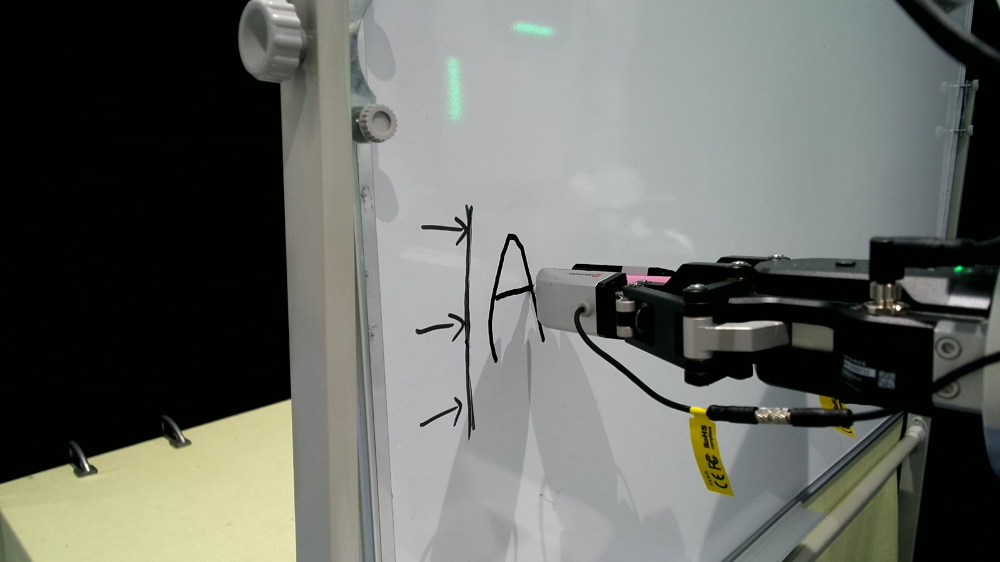
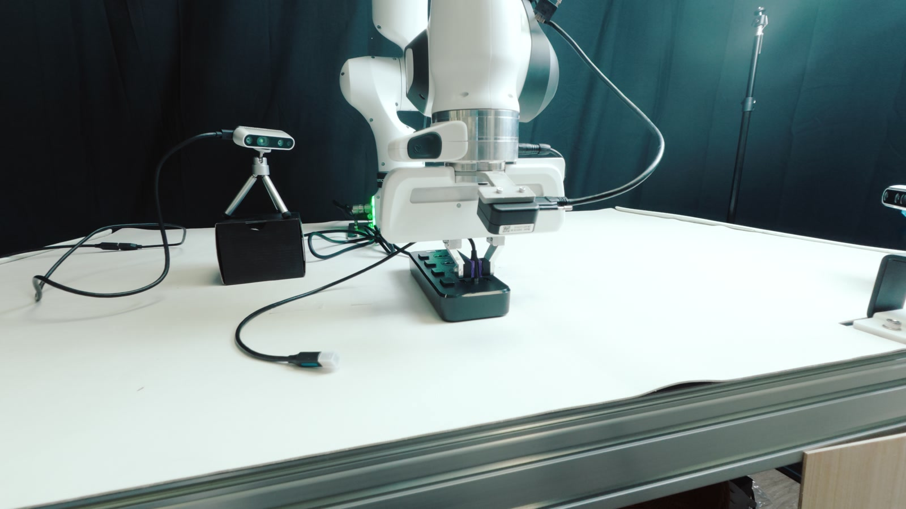
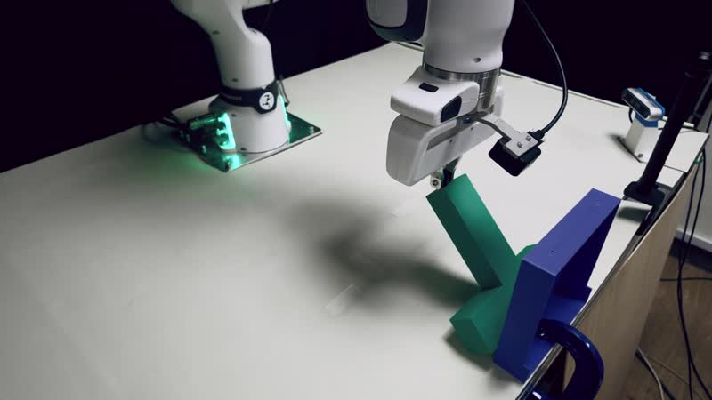
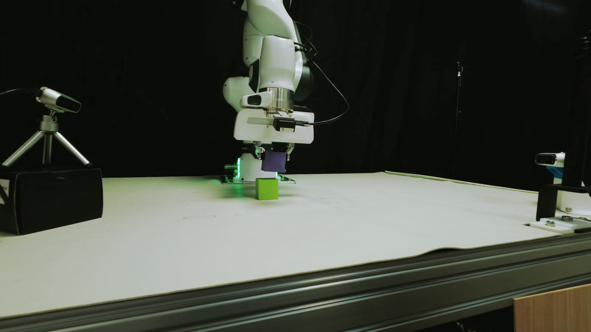

Whiteboard wiping
10/10 successful trials
- Time
- 308 s
- Decisions
- 25.5
- Force
- 15.5 N
136 / 150 successful insertions
10/10 successful trials

10/10 successful trials

29/30 successful trials
| Connector | Success | Time |
|---|---|---|
| USB-A | 10/10 | 200 s |
| Earphone | 9/10 | 269 s |
| IEC C13 | 10/10 | 377 s |

30/30 successful trials
| Speed protocol | Success | Time |
|---|---|---|
| Rokae — Fast | 10/10 | 183 s |
| Rokae — Fast + memory | 10/10 | 96 s |
| Franka — Fast + memory | 10/10 | 147 s |
Real PC: the last five IEC C13 and earphone trials share conversation history; all USB-A trials share history. Speed tests retain conversation history across ten trials with resets between trials. Paper Tables 2–3 ↗

10/10 successful trials

10/10 successful trials

10/10 successful trials

10/10 successful trials

10/10 successful trials
Time and decisions are averaged over successful trials. Force is the median peak contact force. Paper Table 1 ↗
| Method | Successes / 10 trials | Mean over tasks | |||||
|---|---|---|---|---|---|---|---|
| Place | Stack | Insert | Wipe | Write | Pivot | Success ↑% | |
| Code as policies | |||||||
| CaP-X | 5/10 | 3/10 | 1/10 | 4/10 | 1/10 | 0/10 | 23.3 |
| CaP-X + wrist camera | 2/10 | 1/10 | 0/10 | 6/10 | 1/10 | 0/10 | 16.7 |
| CaP-X + our prompt skill | 0/10 | 0/10 | 0/10 | 0/10 | 0/10 | 0/10 | 0.0 |
| GenCHiP (goal only) | 9/10 | 8/10 | 0/10 | 1/10 | 2/10 | 0/10 | 33.3 |
| GenCHiP + our prompt skill | 5/10 | 5/10 | 0/10 | 0/10 | 0/10 | 0/10 | 16.7 |
| Training-based policies | |||||||
| π0.5 | 5/10 | 6/10 | 0/10 | 3/10 | 5/10 | 9/10 | 46.7 |
| π0.5 + force | 8/10 | 6/10 | 1/10 | 4/10 | 8/10 | 10/10 | 61.7 |
| ForceVLA | 10/10 | 8/10 | 2/10 | 6/10 | 6/10 | 9/10 | 68.3 |
| CompliantVLA | 9/10 | 6/10 | 0/10 | 3/10 | 0/10 | 8/10 | 43.3 |
| Harness | |||||||
| Show-Harness | 9/10 | 1/10 | 0/10 | 0/10 | 0/10 | 0/10 | 16.7 |
| Ours | |||||||
| Contact Harness (Astra) | 10/10 | 10/10 | 8/10 | 10/10 | 10/10 | 10/10 | 96.7 |
| Contact Harness (Fable 5.1) | 10/10 | 10/10 | 9/10 | 10/10 | 10/10 | 10/10 | 98.3 |
| Contact Harness (Fable 5.2) | 10/10 | 10/10 | 9/10 | 10/10 | 10/10 | 10/10 | 98.3 |
Successes out of 10 trials per task.